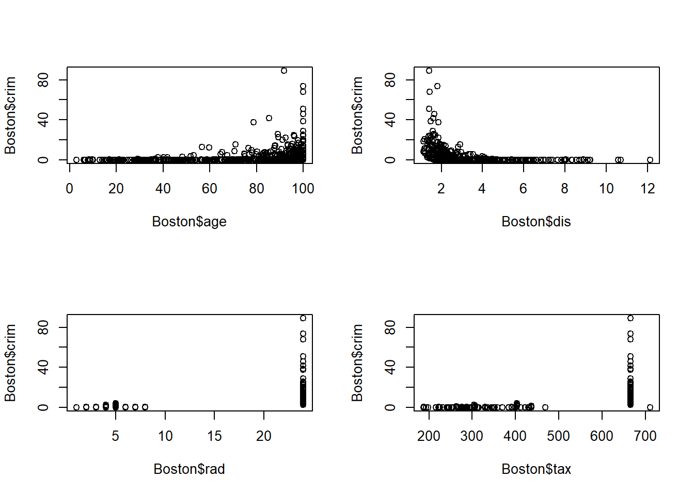

Practical 2
For the tasks below, you will require the Boston dataset. This
dataset is part of the MASS R package.
To access the dataset, load the MASS package (install the package
first, if you have not done so previously).
Task 1
Install and load the MASS package. You will also require tidyverse.
Code
Does R provide any message when loading MASS? Why does this matter?
One important message that R provides when loading MASS is that this
package masks the select() function from tidyverse.
Attaching package: ‘MASS’
The following object is masked from ‘package:dplyr’:
`select` When masking occurs, this means that both packages contain the same
function. If you were to use the select() function, R will call the
function from the MASS package, rather than from tidyverse (dplyr)
package. This is because the MASS package is the one masking the
function. If you intend to use the select() function as defined by the
tidyverse package, it may not work as intended and/or you may be
prompted by an error message such as:
Error in select(...): unused argument (...)
To avoid such issues, you must ‘call’ on the package from which you want
R to use the masked function (e.g. dplyr::select()). This is why it is
important to read through all warnings and messages provided in the
console.
Task 2
Find out more about the Boston dataset variables by accessing the R
Documentation.
To explore the Boston dataset, simply type the name of the data object
into the console or use View()
What type of data structure is the Boston dataset? What are its
dimensions? How many categorical and quantitative variables are there?
The Boston dataset is a data frame with 506 rows (observations) and 14
columns (variables). There is one categorical variable (chas), and 13
quantitative variables.
Task 3
Find the class of all 14 variables. Hint: use sapply.
## crim zn indus chas nox rm age dis
## "numeric" "numeric" "numeric" "integer" "numeric" "numeric" "numeric" "numeric"
## rad tax ptratio black lstat medv
## "integer" "numeric" "numeric" "numeric" "numeric" "numeric"Task 4
Using a tidyverse approach, calculate the mean, median, and standard
deviation of all variables of class numeric.
Code
## # A tibble: 14 × 4
## name Mean SD Median
## <chr> <dbl> <dbl> <dbl>
## 1 age 68.6 28.1 77.5
## 2 black 357. 91.3 391.
## 3 chas 0.0692 0.254 0
## 4 crim 3.61 8.60 0.257
## 5 dis 3.80 2.11 3.21
## 6 indus 11.1 6.86 9.69
## 7 lstat 12.7 7.14 11.4
## 8 medv 22.5 9.20 21.2
## 9 nox 0.555 0.116 0.538
## 10 ptratio 18.5 2.16 19.0
## 11 rad 9.55 8.71 5
## 12 rm 6.28 0.703 6.21
## 13 tax 408. 169. 330
## 14 zn 11.4 23.3 0What is the mean pupil-teacher ratio? What is the median and mean per capita crime rate? Which value do you think is more suitable to describe per capita crime rate?
The mean pupil-teacher ratio is about 19. The median crime rate is 0.257 whilst the mean is larger at 3.61. Given the difference between the median and the mean, a skewed distribution is expected, therefore, the median may be a more a suitable summary statistic to describe crime rate (a histogram would be needed)
Task 5
Using a base R approach, create a 2x2 multipanel plot of crim versus
age, dis, rad, tax and ptratio.
Code

What can you say about the relationships between age, dis, rad,
tax, and crim?
As the age of the home increases (age), crime also increases. There is
also higher crime around employment centers (dis). With very high
index of accessibility to radial highways (rad), and tax rates (tax)
there also appears to be high crime rates.
Task 6
Using a base R approach, create and display histograms of crim, tax
and ptratio in a 1x2 multipanel plot. Set the breaks argument to
25 .

What do these histograms indicate?
Most areas have low crime rates, but there is a rather long tail showing high crime rates (although the frequency seems to be very low). Given the degree of skew, the mean would not be a good measure of central tendency. With respect to tax rates, there appears to be a large divide between low taxation and high taxation, with the highest peak at around 670.
Remember to revert back to single panel display.